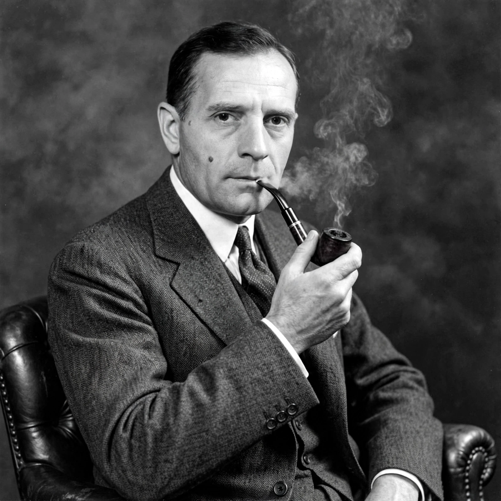

Edwin Hubble
| Born | 20 November 1889, Marshfield, Missouri, US |
|---|---|
| Died | 28 September 1953 (aged 63), San Marino, California, US |
| Known for | Hubble's law, galaxy classification, expanding universe |
| Institutions | Mount Wilson Observatory, Mount Palomar Observatory |

[Image: Studio portrait of Edwin Hubble, seated, in a suit]Edwin Powell Hubble (20 November 1889 – 28 September 1953) was an American astronomer. He played a crucial role in establishing the fields of extragalactic astronomy and observational cosmology.
Hubble proved that many objects then called 'spiral nebulae' were in fact galaxies beyond the Milky Way. In 1929 he announced the relation, now known as Hubble's law, between the redshifts of galaxies and their distances, providing the first observational evidence for the expansion of the universe and the Big Bang theory. The Hubble Space Telescope and the Hubble constant are named after him.
Early life
Hubble was born in Marshfield, Missouri, and studied mathematics and astronomy at the University of Chicago, where he was also a talented athlete and boxer. He spent a year at Oxford as a Rhodes Scholar studying law, then returned to the United States, taught school briefly, and completed a doctorate in astronomy at Yerkes Observatory in 1917. After serving in the First World War he joined the staff of the Mount Wilson Observatory in California in 1919.
The island universes
Using Mount Wilson's 100-inch Hooker telescope, then the largest in the world, Hubble identified Cepheid variable stars in the Andromeda 'nebula' in 1923–24. Applying the period–luminosity relation discovered by Henrietta Swan Leavitt, he showed that Andromeda lay far outside the Milky Way — settling the Great Debate of 1920 and transforming cosmology: the universe contained countless galaxies beyond our own.
Hubble's law and classification
Combining his own distance measurements with Vesto Slipher's redshift data, Hubble reported in 1929 a roughly linear relation between a galaxy's distance and its recession velocity, v = H₀d. Georges Lemaître had derived the same relation theoretically in 1927, and the law is now formally called the Hubble–Lemaître law. The proportionality constant H₀, the Hubble constant, sets the expansion rate and the age scale of the universe; its precise value long remained contested (the 'Hubble tension' persists today).
Hubble also devised the classification of galaxies into ellipticals, spirals and barred spirals arranged in the 'tuning fork' diagram, still in use in simplified form.
Later life and legacy
Hubble worked at Mount Wilson and helped bring the 200-inch Hale Telescope at Palomar into service after the Second World War. He died in 1953. Although he never received the Nobel Prize — astronomy was then largely excluded — he is widely regarded as the founder of modern observational cosmology, and the space telescope launched in 1990 bears his name.